CODING AGENTS AS PIXEL WORLD MODELS
traex/DeepSeek-V4.1-Flash · phygen_100
点击播放 · 原生 RGB 像素
逐轮保存的候选
回放视频、检查图与代码变化。
每份候选均可单独播放。实际图片检查记录在下方工具轨迹中。
候选 01播放与检查图
点击播放 · 原生 RGB 像素
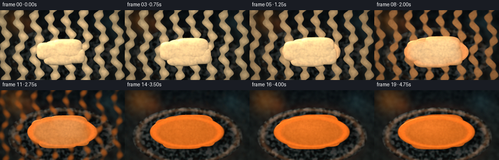
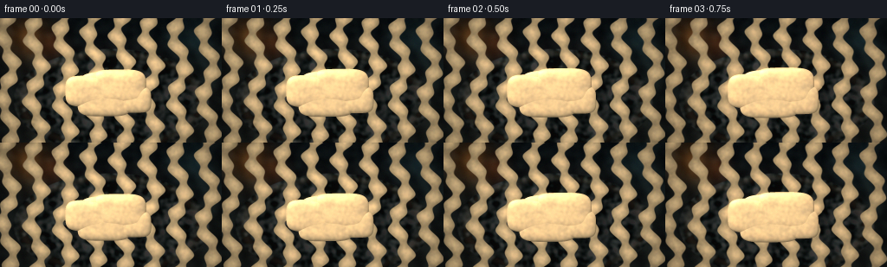
展开代码变化
--- 上一保存版本
+++ 本次保存版本
@@ -0,0 +1,320 @@
+from pathlib import Path
+
+import cv2
+import numpy as np
+from PIL import Image, ImageDraw
+from scipy.ndimage import gaussian_filter
+
+import artifact_io
+
+
+WIDTH = 256
+HEIGHT = 144
+FRAMES = 20
+FPS = 4.0
+SS = 4
+HW = WIDTH * SS
+HH = HEIGHT * SS
+
+
+def smoothstep(edge0, edge1, value):
+ value = np.clip((value - edge0) / (edge1 - edge0), 0.0, 1.0)
+ return value * value * (3.0 - 2.0 * value)
+
+
+def normalized(vector):
+ vector = np.asarray(vector, dtype=np.float32)
+ return vector / np.sqrt(np.sum(vector * vector))
+
+
+def resize_float(field, shape):
+ return cv2.resize(field.astype(np.float32), shape, interpolation=cv2.INTER_CUBIC)
+
+
+def noise_field(seed, cells, smooth=1.1):
+ rng = np.random.default_rng(seed)
+ grid = rng.normal(size=(max(3, HH // cells), max(3, HW // cells))).astype(np.float32)
+ grid = gaussian_filter(grid, smooth)
+ field = resize_float(grid, (HW, HH))
+ field -= field.mean()
+ field /= max(field.std(), 1e-5)
+ return field
+
+
+def make_background(xx, yy):
+ v = yy / HEIGHT
+ top = np.array([10, 17, 21], dtype=np.float32) / 255.0
+ bottom = np.array([31, 38, 36], dtype=np.float32) / 255.0
+ bg = top[None, None, :] * (1.0 - v[..., None]) + bottom[None, None, :] * v[..., None]
+
+ # Defocused practical lights and a cool reflection keep the dark backdrop from
+ # reading as a flat studio card.
+ for cx, cy, radius, color, strength in (
+ (30, 20, 27, (0.93, 0.55, 0.20), 0.42),
+ (57, 31, 15, (0.75, 0.32, 0.10), 0.28),
+ (219, 22, 21, (0.25, 0.55, 0.63), 0.18),
+ (242, 45, 29, (0.46, 0.68, 0.69), 0.10),
+ ):
+ d = np.sqrt((xx - cx) ** 2 + (yy - cy) ** 2)
+ glow = np.exp(-(d / radius) ** 2) * strength
+ bg = bg * (1.0 - glow[..., None]) + np.asarray(color, dtype=np.float32)[None, None, :] * glow[..., None]
+
+ grain = noise_field(11, 8, 1.4)
+ bg += grain[..., None] * np.array([0.012, 0.015, 0.014], dtype=np.float32)
+ return np.clip(bg, 0.0, 1.0)
+
+
+def render_dish(xx, yy, plate_tex, warm):
+ cx, cy = 128.0, 95.0
+ rx, ry = 113.0, 60.0
+ q = np.sqrt(((xx - cx) / rx) ** 2 + ((yy - cy) / ry) ** 2)
+
+ # A shallow stoneware saucer with a raised, slightly irregular lip.
+ lip_warp = 0.010 * np.sin(np.arctan2((yy - cy) / ry, (xx - cx) / rx) * 7.0 + 0.8)
+ lip = np.exp(-((q - 0.91 - lip_warp) / 0.055) ** 2)
+ floor = -1.8 * np.clip(1.0 - (q / 0.88) ** 2, 0.0, 1.0)
+ h = 4.2 * lip + floor + 0.35 * plate_tex
+
+ dhdy, dhdx = np.gradient(h)
+ nx, ny, nz = -dhdx * 0.75, -dhdy * 0.75, np.ones_like(h)
+ inv_len = 1.0 / np.sqrt(nx * nx + ny * ny + nz * nz)
+ nx, ny, nz = nx * inv_len, ny * inv_len, nz * inv_len
+ light = normalized((-0.48, -0.72, 0.70))
+ half = normalized(light + np.array([0.0, 0.0, 1.0]))
+ ndl = np.clip(nx * light[0] + ny * light[1] + nz * light[2], 0.0, 1.0)
+ ndh = np.clip(nx * half[0] + ny * half[1] + nz * half[2], 0.0, 1.0)
+ spec = ndh ** 36.0
+
+ ceramic = np.array([0.115, 0.145, 0.145], dtype=np.float32)
+ mottling = 0.10 * plate_tex[..., None] + 0.025 * np.sin(xx * 0.20 + yy * 0.08)[..., None]
+ albedo = np.clip(ceramic + mottling, 0.035, 0.25)
+ shade = 0.55 + 0.62 * ndl
+ rgb = albedo * shade[..., None]
+ rim_color = np.array([0.36, 0.27, 0.18], dtype=np.float32)
+ rgb += rim_color * (lip * (0.24 + 0.30 * warm))[..., None]
+ rgb += np.array([0.58, 0.62, 0.58], dtype=np.float32) * (0.19 * spec)[..., None]
+ rgb += np.array([0.24, 0.075, 0.018], dtype=np.float32) * (0.35 * warm * lip)[..., None]
+
+ mask = smoothstep(1.01, 0.985, q)
+ return rgb, mask, q
+
+
+def wax_height_and_mask(xx, yy, melt):
+ cx, cy = 127.0, 86.0
+ spread = melt ** 0.62
+ widths = 1.0 + 0.45 * spread
+ amp_scale = (1.0 - 0.91 * melt) ** 1.10
+
+ # Overlapping solid lobes create the chunky silhouette and the creases seen
+ # in the first half of the timelapse. Their heights fall as the pool grows.
+ lobes = (
+ (-24.0, -2.0, 28.0, 18.0, 0.97),
+ (10.0, -7.0, 31.0, 20.0, 1.08),
+ (27.0, 8.0, 20.0, 15.0, 0.84),
+ (-7.0, 10.0, 31.0, 17.0, 0.92),
+ (0.0, -1.0, 37.0, 23.0, 0.78),
+ )
+ solid = np.zeros_like(xx)
+ for dx, dy, sx, sy, amp in lobes:
+ shifted_x = cx + dx * (1.0 + 0.14 * melt)
+ shifted_y = cy + dy * (1.0 + 0.10 * melt)
+ sx = sx * widths
+ sy = sy * widths
+ rr = ((xx - shifted_x) / sx) ** 4 + ((yy - shifted_y) / sy) ** 4
+ dome = np.clip(1.0 - rr, 0.0, 1.0) ** 0.58
+ solid = np.maximum(solid, 20.5 * amp * amp_scale * dome)
+
+ liquid_rx = 49.0 + 29.0 * spread
+ liquid_ry = 25.0 + 8.5 * spread
+ qliq = np.sqrt(((xx - cx) / liquid_rx) ** 2 + ((yy - cy) / liquid_ry) ** 2)
+ liquid_body = np.clip(1.0 - qliq ** 6, 0.0, 1.0) ** 0.43
+ liquid = (1.5 + 2.5 * melt) * liquid_body
+ meniscus = 1.1 * melt * np.exp(-((qliq - 0.93) / 0.055) ** 2)
+ liquid += meniscus
+
+ h = np.maximum(solid, liquid * smoothstep(0.03, 0.32, melt))
+ h += 0.62 * (1.0 - melt) ** 1.7 * np.sin(xx * 0.19 + 1.2 * np.sin(yy * 0.085))
+ h += 0.35 * (1.0 - melt) ** 2.0 * np.sin(yy * 0.27 - xx * 0.045 + 1.7)
+ h = np.maximum(h, 0.0)
+ mask = smoothstep(0.015, 0.16, h)
+ return h, mask, qliq, liquid_rx, liquid_ry
+
+
+def add_bubbles(h, xx, yy, melt, frame_index, liquid_rx, liquid_ry):
+ if melt < 0.30:
+ return h
+
+ bubbles = (
+ (-26.0, 7.0, 0.40, 0.58, 2.1, 0.00),
+ (7.0, 10.0, 0.48, 0.74, 2.7, 0.05),
+ (30.0, 1.0, 0.54, 0.79, 1.7, 0.08),
+ (-6.0, -8.0, 0.60, 0.88, 2.3, 0.11),
+ (22.0, 12.0, 0.65, 0.92, 1.8, 0.14),
+ (-34.0, -4.0, 0.70, 0.96, 1.5, 0.16),
+ )
+ phase = frame_index / (FRAMES - 1)
+ result = h.copy()
+ for bx, by, birth, death, base_radius, wobble in bubbles:
+ if phase < birth or phase > death:
+ continue
+ life = (phase - birth) / max(death - birth, 1e-6)
+ rise = 2.3 * life
+ x0 = 127.0 + bx * (liquid_rx / 78.0) + 1.0 * np.sin(life * 8.0 + wobble)
+ y0 = 86.0 + by * (liquid_ry / 33.0) - rise
+ radius = base_radius * (0.72 + 0.32 * np.sin(np.pi * life))
+ d = np.sqrt((xx - x0) ** 2 + (yy - y0) ** 2)
+ ring = np.exp(-((d - radius) / 0.48) ** 2)
+ dimple = np.exp(-(d / max(radius * 0.60, 0.4)) ** 2)
+ fade = np.sin(np.pi * np.clip(life, 0.0, 1.0)) ** 0.35
+ result += (0.55 * ring - 0.34 * dimple) * fade
+ return result
+
+
+def render_wax(xx, yy, wax_tex, melt, frame_index):
+ h, mask, qliq, liquid_rx, liquid_ry = wax_height_and_mask(xx, yy, melt)
+ h = add_bubbles(h, xx, yy, melt, frame_index, liquid_rx, liquid_ry)
+
+ dhdy, dhdx = np.gradient(h)
+ slope = 0.88
+ nx, ny, nz = -dhdx * slope, -dhdy * slope, np.ones_like(h)
+ inv_len = 1.0 / np.sqrt(nx * nx + ny * ny + nz * nz)
+ nx, ny, nz = nx * inv_len, ny * inv_len, nz * inv_len
+
+ light = normalized((-0.48, -0.76, 0.70))
+ half = normalized(light + np.array([0.0, 0.0, 1.0]))
+ ndl = np.clip(nx * light[0] + ny * light[1] + nz * light[2], 0.0, 1.0)
+ ndh = np.clip(nx * half[0] + ny * half[1] + nz * half[2], 0.0, 1.0)
+
+ warmth = smoothstep(0.04, 0.90, melt)
+ core = smoothstep(3.0, 13.0, h) * (1.0 - smoothstep(0.72, 0.98, melt))
+ local_melt = np.clip(warmth * (0.88 + 0.25 * (1.0 - np.clip(h / 16.0, 0.0, 1.0))) - 0.37 * core, 0.0, 1.0)
+
+ ivory = np.array([0.91, 0.80, 0.59], dtype=np.float32)
+ honey = np.array([0.78, 0.40, 0.105], dtype=np.float32)
+ albedo = ivory[None, None, :] * (1.0 - local_melt[..., None]) + honey[None, None, :] * local_melt[..., None]
+ albedo += wax_tex[..., None] * np.array([0.035, 0.028, 0.017], dtype=np.float32) * (1.0 - 0.55 * local_melt[..., None])
+
+ edge_ao = 0.69 + 0.31 * smoothstep(0.0, 1.1, h)
+ diffuse = 0.58 + 0.67 * ndl
+ rgb = albedo * (diffuse * edge_ao)[..., None]
+
+ spec_power = 22.0 + 70.0 * melt
+ spec_strength = 0.20 + 0.58 * melt
+ spec = (ndh ** spec_power) * spec_strength
+ spec_color = np.array([1.0, 0.92, 0.72], dtype=np.float32)
+ rgb += spec_color[None, None, :] * spec[..., None]
+
+ # Thin, warm transmission around the spreading edge sells the change from
+ # opaque solid wax to a backlit liquid film.
+ thin_edge = np.exp(-((qliq - 0.90) / 0.075) ** 2) * melt
+ rgb += np.array([0.90, 0.31, 0.045], dtype=np.float32) * (0.24 * thin_edge)[..., None]
+ rgb += np.array([0.75, 0.18, 0.025], dtype=np.float32) * (0.16 * local_melt * np.clip(1.0 - h / 5.0, 0.0, 1.0))[..., None]
+
+ # The last liquid frames get a gentle broad reflection from the overhead light.
+ pool_sheen = smoothstep(0.72, 1.0, melt) * np.exp(-((xx - 107.0) / 42.0) ** 2 - ((yy - 76.0) / 17.0) ** 2)
+ rgb += np.array([0.55, 0.46, 0.31], dtype=np.float32) * (0.13 * pool_sheen)[..., None]
+ return np.clip(rgb, 0.0, 1.5), mask, h, local_melt
+
+
+def add_steam(image, melt, frame_index):
+ if melt < 0.46:
+ return image
+
+ phase = frame_index / (FRAMES - 1)
+ layer = Image.new("L", (HW, HH), 0)
+ draw = ImageDraw.Draw(layer)
+ wisps = (
+ (112.0, 56.0, 17.0, 0.0),
+ (137.0, 62.0, 20.0, 1.9),
+ (156.0, 70.0, 14.0, 3.5),
+ )
+ for base_x, base_y, height, offset in wisps:
+ points = []
+ for j in range(18):
+ u = j / 17.0
+ y = base_y - u * height
+ x = base_x + 2.0 * np.sin(u * 5.0 + offset + phase * 4.0) + 3.8 * u * np.sin(phase * 5.0 + offset)
+ points.append((int(x * SS), int(y * SS)))
+ draw.line(points, fill=128, width=max(1, int(1.5 * SS)), joint="curve")
+
+ alpha = np.asarray(layer, dtype=np.float32) / 255.0
+ alpha = gaussian_filter(alpha, 4.2 * SS)
+ alpha *= 0.20 * smoothstep(0.46, 0.80, melt)
+ steam_color = np.array([0.76, 0.75, 0.67], dtype=np.float32)
+ return image * (1.0 - alpha[..., None]) + steam_color[None, None, :] * alpha[..., None]
+
+
+def render_frame(frame_index):
+ p = frame_index / (FRAMES - 1)
+ melt = smoothstep(0.0, 1.0, p) ** 0.86
+ warm = smoothstep(0.08, 0.96, p)
+
+ yy, xx = np.mgrid[0:HH, 0:HW].astype(np.float32)
+ xx = (xx + 0.5) / SS - 0.5
+ yy = (yy + 0.5) / SS - 0.5
+
+ plate_tex = noise_field(31, 6, 1.25) * 0.8 + noise_field(37, 18, 0.8) * 0.20
+ wax_tex = noise_field(53, 4, 1.15) * 0.75 + noise_field(59, 12, 0.9) * 0.25
+
+ image = make_background(xx, yy)
+ dish_rgb, dish_mask, q = render_dish(xx, yy, plate_tex, warm)
+
+ # A low amber heat source becomes visible around and under the saucer.
+ heat_halo = np.exp(-((np.sqrt((xx - 128.0) ** 2 + ((yy - 100.0) * 1.45) ** 2) - 87.0) / 21.0) ** 2)
+ heat_halo *= (0.035 + 0.105 * warm)
+ image = image * (1.0 - heat_halo[..., None]) + np.array([0.72, 0.18, 0.035], dtype=np.float32)[None, None, :] * heat_halo[..., None]
+
+ dish_shadow = np.exp(-(((xx - 131.0) / 118.0) ** 2 + ((yy - 102.0) / 65.0) ** 2))
+ image *= 1.0 - 0.36 * dish_shadow[..., None]
+ image = image * (1.0 - dish_mask[..., None]) + dish_rgb * dish_mask[..., None]
+
+ wax_rgb, wax_mask, wax_h, local_melt = render_wax(xx, yy, wax_tex, melt, frame_index)
+
+ # Cast shadow grows softer and tighter as the tall solid mound collapses.
+ shadow_mask = np.roll(wax_mask, (5 * SS, 13 * SS), axis=(0, 1))
+ shadow_mask = gaussian_filter(shadow_mask, sigma=SS * (3.0 + 2.3 * (1.0 - melt)))
+ image *= 1.0 - 0.52 * shadow_mask[..., None]
+ image = image * (1.0 - wax_mask[..., None]) + wax_rgb * wax_mask[..., None]
+
+ image = add_steam(image, melt, frame_index)
+
+ # Gentle heat shimmer, strongest over the hot wax, but too small to wobble
+ # the stable composition.
+ shimmer = 0.22 * smoothstep(0.35, 0.95, melt)
+ if shimmer > 0.01:
+ top = slice(0, int(76 * SS))
+ ys = np.arange(int(76 * SS), dtype=np.float32)
+ xs = np.arange(HW, dtype=np.float32)
+ grid_y, grid_x = np.mgrid[0:int(76 * SS), 0:HW].astype(np.float32)
+ mask = smoothstep(76.0, 25.0, yy[: int(76 * SS)]) * smoothstep(58.0, 12.0, np.abs(xx[: int(76 * SS)] - 128.0))
+ map_x = np.ascontiguousarray(grid_x + shimmer * SS * np.sin(grid_y / (7.5 * SS) + frame_index * 0.85) * mask, dtype=np.float32)
+ map_y = np.ascontiguousarray(grid_y, dtype=np.float32)
+ warped = cv2.remap(image[top], map_x, map_y, interpolation=cv2.INTER_LINEAR, borderMode=cv2.BORDER_REFLECT)
+ image[top] = warped
+
+ # Lens falloff, restrained bloom and a final warm/cool split.
+ vignette = np.clip(1.0 - 0.27 * (((xx - 128.0) / 145.0) ** 2 + ((yy - 77.0) / 105.0) ** 2), 0.70, 1.0)
+ image *= vignette[..., None]
+ small = cv2.resize(image, (WIDTH, HEIGHT), interpolation=cv2.INTER_AREA)
+ bloom_source = np.clip(small - 0.70, 0.0, None)
+ bloom = gaussian_filter(bloom_source, sigma=(2.1, 2.1, 0.0))
+ small += bloom * 0.28
+
+ small[..., 0] *= 1.035
+ small[..., 2] *= 0.97
+ small = np.clip(small, 0.0, 1.0)
+ small = np.power(small, 0.94)
+ rng = np.random.default_rng(900 + frame_index)
+ small += rng.normal(0.0, 0.0045, small.shape).astype(np.float32)
+ return np.clip(small * 255.0 + 0.5, 0.0, 255.0).astype(np.uint8)
+
+
+def main():
+ case_dir = Path(__file__).resolve().parent
+ frames = np.stack([render_frame(i) for i in range(FRAMES)])
+ artifact_io.save(frames, case_dir)
+ print(f"saved {frames.shape} to {case_dir}")
+
+
+if __name__ == "__main__":
+ main()
候选 02播放与检查图
点击播放 · 原生 RGB 像素
展开代码变化
--- 上一保存版本
+++ 本次保存版本
@@ -22,291 +22,281 @@
return value * value * (3.0 - 2.0 * value)
-def normalized(vector):
+def normalize(vector):
vector = np.asarray(vector, dtype=np.float32)
return vector / np.sqrt(np.sum(vector * vector))
-def resize_float(field, shape):
+def resized(field, shape):
return cv2.resize(field.astype(np.float32), shape, interpolation=cv2.INTER_CUBIC)
-def noise_field(seed, cells, smooth=1.1):
+def noise(seed, scale, octaves=1):
rng = np.random.default_rng(seed)
- grid = rng.normal(size=(max(3, HH // cells), max(3, HW // cells))).astype(np.float32)
- grid = gaussian_filter(grid, smooth)
- field = resize_float(grid, (HW, HH))
- field -= field.mean()
- field /= max(field.std(), 1e-5)
- return field
+ total = np.zeros((HH, HW), dtype=np.float32)
+ weight = 1.0
+ norm = 0.0
+ for octave in range(octaves):
+ cell = max(3, int(scale / (2 ** octave)))
+ low = rng.normal(size=(max(4, HH // cell), max(4, HW // cell))).astype(np.float32)
+ low = gaussian_filter(low, 0.9)
+ total += resized(low, (HW, HH)) * weight
+ norm += weight
+ weight *= 0.48
+ total /= norm
+ total -= total.mean()
+ total /= max(total.std(), 1e-5)
+ return total
+
+
+def superellipse_q(x, y, cx, cy, rx, ry, power=8.0):
+ return (np.abs((x - cx) / rx) ** power + np.abs((y - cy) / ry) ** power) ** (1.0 / power)
def make_background(xx, yy):
- v = yy / HEIGHT
- top = np.array([10, 17, 21], dtype=np.float32) / 255.0
- bottom = np.array([31, 38, 36], dtype=np.float32) / 255.0
- bg = top[None, None, :] * (1.0 - v[..., None]) + bottom[None, None, :] * v[..., None]
-
- # Defocused practical lights and a cool reflection keep the dark backdrop from
- # reading as a flat studio card.
- for cx, cy, radius, color, strength in (
- (30, 20, 27, (0.93, 0.55, 0.20), 0.42),
- (57, 31, 15, (0.75, 0.32, 0.10), 0.28),
- (219, 22, 21, (0.25, 0.55, 0.63), 0.18),
- (242, 45, 29, (0.46, 0.68, 0.69), 0.10),
+ v = np.clip(yy / HEIGHT, 0.0, 1.0)
+ top = np.array([0.025, 0.034, 0.038], dtype=np.float32)
+ bottom = np.array([0.085, 0.076, 0.064], dtype=np.float32)
+ image = top[None, None, :] * (1.0 - v[..., None]) + bottom[None, None, :] * v[..., None]
+
+ # Warm practical light at upper left, cool reflection at upper right.
+ for cx, cy, sx, sy, color, amount in (
+ (22, 16, 36, 28, (0.80, 0.43, 0.13), 0.28),
+ (48, 25, 18, 15, (0.93, 0.61, 0.22), 0.14),
+ (225, 22, 33, 25, (0.23, 0.45, 0.50), 0.11),
):
- d = np.sqrt((xx - cx) ** 2 + (yy - cy) ** 2)
- glow = np.exp(-(d / radius) ** 2) * strength
- bg = bg * (1.0 - glow[..., None]) + np.asarray(color, dtype=np.float32)[None, None, :] * glow[..., None]
-
- grain = noise_field(11, 8, 1.4)
- bg += grain[..., None] * np.array([0.012, 0.015, 0.014], dtype=np.float32)
- return np.clip(bg, 0.0, 1.0)
-
-
-def render_dish(xx, yy, plate_tex, warm):
- cx, cy = 128.0, 95.0
- rx, ry = 113.0, 60.0
+ glow = np.exp(-((xx - cx) / sx) ** 2 - ((yy - cy) / sy) ** 2) * amount
+ image = image * (1.0 - glow[..., None]) + np.asarray(color, dtype=np.float32)[None, None, :] * glow[..., None]
+
+ texture = noise(17, 28, 2)
+ image += texture[..., None] * np.array([0.010, 0.012, 0.011], dtype=np.float32)
+ return np.clip(image, 0.0, 1.0)
+
+
+def render_warmer(xx, yy, grain, heat):
+ cx, cy = 128.0, 91.0
+ rx, ry = 80.0, 39.0
q = np.sqrt(((xx - cx) / rx) ** 2 + ((yy - cy) / ry) ** 2)
- # A shallow stoneware saucer with a raised, slightly irregular lip.
- lip_warp = 0.010 * np.sin(np.arctan2((yy - cy) / ry, (xx - cx) / rx) * 7.0 + 0.8)
- lip = np.exp(-((q - 0.91 - lip_warp) / 0.055) ** 2)
- floor = -1.8 * np.clip(1.0 - (q / 0.88) ** 2, 0.0, 1.0)
- h = 4.2 * lip + floor + 0.35 * plate_tex
-
- dhdy, dhdx = np.gradient(h)
- nx, ny, nz = -dhdx * 0.75, -dhdy * 0.75, np.ones_like(h)
- inv_len = 1.0 / np.sqrt(nx * nx + ny * ny + nz * nz)
- nx, ny, nz = nx * inv_len, ny * inv_len, nz * inv_len
- light = normalized((-0.48, -0.72, 0.70))
- half = normalized(light + np.array([0.0, 0.0, 1.0]))
- ndl = np.clip(nx * light[0] + ny * light[1] + nz * light[2], 0.0, 1.0)
+ # Low cylindrical warmer with a dark ceramic side and a brushed metal top.
+ top_q = np.sqrt(((xx - cx) / (rx - 7.0)) ** 2 + ((yy - (cy - 5.0)) / (ry - 8.0)) ** 2)
+ body_q = np.sqrt(((xx - cx) / rx) ** 2 + ((yy - (cy + 2.0)) / ry) ** 2)
+ rim = np.exp(-((q - 0.92) / 0.035) ** 2)
+ top = smoothstep(1.02, 0.97, top_q)
+ body = smoothstep(1.03, 0.985, body_q)
+
+ # Concentric machining and grime on the metal top.
+ metal = np.broadcast_to(np.array([0.29, 0.27, 0.235], dtype=np.float32), xx.shape + (3,)).copy()
+ metal += 0.035 * np.cos(top_q * 66.0)[..., None]
+ metal += 0.020 * grain[..., None]
+ hot_center = np.exp(-(top_q / 0.82) ** 2)
+ metal += np.array([0.42, 0.115, 0.018], dtype=np.float32) * (0.48 * heat * hot_center)[..., None]
+
+ side = np.broadcast_to(np.array([0.075, 0.078, 0.074], dtype=np.float32), xx.shape + (3,)).copy()
+ side += np.array([0.12, 0.11, 0.09], dtype=np.float32) * (0.15 * np.exp(-((xx - 88.0) / 24.0) ** 2))[..., None]
+ rim_color = np.array([0.42, 0.34, 0.24], dtype=np.float32)
+ rgb = side * (1.0 - top[..., None]) + metal * top[..., None]
+ rgb += rim_color * (0.44 * rim)[..., None]
+ rgb += np.array([0.74, 0.22, 0.025], dtype=np.float32) * (0.12 * heat * rim)[..., None]
+ return rgb, body, q
+
+
+def wax_fields(xx, yy, p):
+ melt = smoothstep(0.02, 1.0, p) ** 0.90
+ cx, cy = 128.0, 79.5
+
+ # The solid is a beveled rounded rectangle. It relaxes into a broad pool.
+ block_rx = 39.0 + 5.0 * melt
+ block_ry = 22.0 + 3.0 * melt
+ corner_power = 7.0 - 3.1 * smoothstep(0.12, 0.84, melt)
+ qb = superellipse_q(xx, yy, cx, cy - 2.0 * melt, block_rx, block_ry, corner_power)
+ inside = smoothstep(1.015, 0.985, qb)
+ bevel = np.clip((1.0 - qb) / 0.20, 0.0, 1.0)
+ bevel = bevel * bevel * (3.0 - 2.0 * bevel)
+
+ warp = (
+ 0.020 * np.sin(xx * 0.22 + yy * 0.035)
+ + 0.012 * np.sin(xx * 0.075 - yy * 0.27 + 1.4)
+ )
+ top_relief = (
+ 0.36 * np.sin(xx * 0.18 + 1.0) * np.sin(yy * 0.24)
+ + 0.20 * np.sin(xx * 0.33 - yy * 0.09)
+ )
+ top_relief *= (1.0 - melt) ** 1.25
+ dome = (1.0 - np.clip(qb, 0.0, 1.0) ** 2) ** 0.52
+ block_height = (
+ 9.0 * (1.0 - 0.88 * melt) * (0.60 + 0.40 * bevel) * dome
+ + 0.48 * bevel
+ + top_relief
+ ) * inside
+
+ # Melted pool has an irregular meniscus and expands past the original block.
+ pool_rx = 55.0 + 21.0 * melt
+ pool_ry = 25.0 + 9.0 * melt
+ qp = np.sqrt(((xx - cx) / pool_rx) ** 2 + ((yy - cy) / pool_ry) ** 2)
+ qp += warp * smoothstep(0.15, 0.75, melt)
+ pool_inside = smoothstep(1.015, 0.97, qp)
+ pool_dome = np.clip(1.0 - qp ** 5, 0.0, 1.0) ** 0.44
+ pool_height = pool_inside * (0.85 + 1.55 * melt * pool_dome)
+ pool_height += 0.72 * melt * np.exp(-((qp - 0.95) / 0.042) ** 2)
+
+ # A soft-wax band bridges the rigid solid and the flowing liquid.
+ soft = smoothstep(0.24, 0.67, melt) * (1.0 - smoothstep(0.76, 0.98, melt))
+ height = np.maximum(block_height, pool_height * smoothstep(0.10, 0.34, melt))
+ height += soft * 0.40 * np.exp(-((qb - 0.88) / 0.12) ** 2)
+
+ mask = smoothstep(0.010, 0.10, height)
+ liquid = smoothstep(0.43, 0.83, melt) * pool_inside
+ return melt, height, mask, liquid, qp, pool_rx, pool_ry
+
+
+def bubble_relief(xx, yy, p, pool_rx, pool_ry):
+ # Discrete bubbles rise, drift and pop while the wax is fluid.
+ bubbles = (
+ (-27, 4, 0.38, 0.61, 2.4),
+ (4, 8, 0.45, 0.72, 3.0),
+ (26, 1, 0.52, 0.79, 2.0),
+ (-7, -5, 0.58, 0.88, 2.6),
+ (19, 9, 0.65, 0.93, 2.1),
+ (-35, -1, 0.70, 0.97, 1.7),
+ )
+ relief = np.zeros_like(xx)
+ rings = np.zeros_like(xx)
+ for index, (bx, by, birth, death, radius) in enumerate(bubbles):
+ if p < birth or p > death:
+ continue
+ life = (p - birth) / (death - birth)
+ x0 = 128.0 + bx * (pool_rx / 76.0) + 0.9 * np.sin(life * 8.0 + index)
+ y0 = 79.5 + by * (pool_ry / 34.0) - 1.7 * life
+ rr = radius * (0.70 + 0.34 * np.sin(np.pi * life))
+ d = np.sqrt((xx - x0) ** 2 + (yy - y0) ** 2)
+ fade = np.sin(np.pi * life) ** 0.35
+ relief += (
+ 0.42 * np.exp(-((d - rr) / 0.36) ** 2)
+ - 0.24 * np.exp(-(d / (rr * 0.65)) ** 2)
+ ) * fade
+ rings += 0.52 * np.exp(-((d - rr) / 0.34) ** 2) * fade
+ return relief, rings
+
+
+def shade_wax(xx, yy, grain, fine, melt, height, liquid, qp, pool_rx, pool_ry, p):
+ bubble, bubble_ring = bubble_relief(xx, yy, p, pool_rx, pool_ry)
+ surface = height + bubble * smoothstep(0.45, 0.75, melt)
+ gy, gx = np.gradient(surface)
+ nx, ny, nz = -gx * 0.95, -gy * 0.95, np.ones_like(surface)
+ inv = 1.0 / np.sqrt(nx * nx + ny * ny + nz * nz)
+ nx, ny, nz = nx * inv, ny * inv, nz * inv
+
+ key = normalize((-0.52, -0.76, 0.72))
+ fill = normalize((0.66, -0.18, 0.63))
+ half = normalize(key + np.array([0.0, 0.0, 1.0]))
+ ndl = np.clip(nx * key[0] + ny * key[1] + nz * key[2], 0.0, 1.0)
+ ndf = np.clip(nx * fill[0] + ny * fill[1] + nz * fill[2], 0.0, 1.0)
ndh = np.clip(nx * half[0] + ny * half[1] + nz * half[2], 0.0, 1.0)
- spec = ndh ** 36.0
-
- ceramic = np.array([0.115, 0.145, 0.145], dtype=np.float32)
- mottling = 0.10 * plate_tex[..., None] + 0.025 * np.sin(xx * 0.20 + yy * 0.08)[..., None]
- albedo = np.clip(ceramic + mottling, 0.035, 0.25)
- shade = 0.55 + 0.62 * ndl
- rgb = albedo * shade[..., None]
- rim_color = np.array([0.36, 0.27, 0.18], dtype=np.float32)
- rgb += rim_color * (lip * (0.24 + 0.30 * warm))[..., None]
- rgb += np.array([0.58, 0.62, 0.58], dtype=np.float32) * (0.19 * spec)[..., None]
- rgb += np.array([0.24, 0.075, 0.018], dtype=np.float32) * (0.35 * warm * lip)[..., None]
-
- mask = smoothstep(1.01, 0.985, q)
- return rgb, mask, q
-
-
-def wax_height_and_mask(xx, yy, melt):
- cx, cy = 127.0, 86.0
- spread = melt ** 0.62
- widths = 1.0 + 0.45 * spread
- amp_scale = (1.0 - 0.91 * melt) ** 1.10
-
- # Overlapping solid lobes create the chunky silhouette and the creases seen
- # in the first half of the timelapse. Their heights fall as the pool grows.
- lobes = (
- (-24.0, -2.0, 28.0, 18.0, 0.97),
- (10.0, -7.0, 31.0, 20.0, 1.08),
- (27.0, 8.0, 20.0, 15.0, 0.84),
- (-7.0, 10.0, 31.0, 17.0, 0.92),
- (0.0, -1.0, 37.0, 23.0, 0.78),
- )
- solid = np.zeros_like(xx)
- for dx, dy, sx, sy, amp in lobes:
- shifted_x = cx + dx * (1.0 + 0.14 * melt)
- shifted_y = cy + dy * (1.0 + 0.10 * melt)
- sx = sx * widths
- sy = sy * widths
- rr = ((xx - shifted_x) / sx) ** 4 + ((yy - shifted_y) / sy) ** 4
- dome = np.clip(1.0 - rr, 0.0, 1.0) ** 0.58
- solid = np.maximum(solid, 20.5 * amp * amp_scale * dome)
-
- liquid_rx = 49.0 + 29.0 * spread
- liquid_ry = 25.0 + 8.5 * spread
- qliq = np.sqrt(((xx - cx) / liquid_rx) ** 2 + ((yy - cy) / liquid_ry) ** 2)
- liquid_body = np.clip(1.0 - qliq ** 6, 0.0, 1.0) ** 0.43
- liquid = (1.5 + 2.5 * melt) * liquid_body
- meniscus = 1.1 * melt * np.exp(-((qliq - 0.93) / 0.055) ** 2)
- liquid += meniscus
-
- h = np.maximum(solid, liquid * smoothstep(0.03, 0.32, melt))
- h += 0.62 * (1.0 - melt) ** 1.7 * np.sin(xx * 0.19 + 1.2 * np.sin(yy * 0.085))
- h += 0.35 * (1.0 - melt) ** 2.0 * np.sin(yy * 0.27 - xx * 0.045 + 1.7)
- h = np.maximum(h, 0.0)
- mask = smoothstep(0.015, 0.16, h)
- return h, mask, qliq, liquid_rx, liquid_ry
-
-
-def add_bubbles(h, xx, yy, melt, frame_index, liquid_rx, liquid_ry):
- if melt < 0.30:
- return h
-
- bubbles = (
- (-26.0, 7.0, 0.40, 0.58, 2.1, 0.00),
- (7.0, 10.0, 0.48, 0.74, 2.7, 0.05),
- (30.0, 1.0, 0.54, 0.79, 1.7, 0.08),
- (-6.0, -8.0, 0.60, 0.88, 2.3, 0.11),
- (22.0, 12.0, 0.65, 0.92, 1.8, 0.14),
- (-34.0, -4.0, 0.70, 0.96, 1.5, 0.16),
- )
- phase = frame_index / (FRAMES - 1)
- result = h.copy()
- for bx, by, birth, death, base_radius, wobble in bubbles:
- if phase < birth or phase > death:
- continue
- life = (phase - birth) / max(death - birth, 1e-6)
- rise = 2.3 * life
- x0 = 127.0 + bx * (liquid_rx / 78.0) + 1.0 * np.sin(life * 8.0 + wobble)
- y0 = 86.0 + by * (liquid_ry / 33.0) - rise
- radius = base_radius * (0.72 + 0.32 * np.sin(np.pi * life))
- d = np.sqrt((xx - x0) ** 2 + (yy - y0) ** 2)
- ring = np.exp(-((d - radius) / 0.48) ** 2)
- dimple = np.exp(-(d / max(radius * 0.60, 0.4)) ** 2)
- fade = np.sin(np.pi * np.clip(life, 0.0, 1.0)) ** 0.35
- result += (0.55 * ring - 0.34 * dimple) * fade
- return result
-
-
-def render_wax(xx, yy, wax_tex, melt, frame_index):
- h, mask, qliq, liquid_rx, liquid_ry = wax_height_and_mask(xx, yy, melt)
- h = add_bubbles(h, xx, yy, melt, frame_index, liquid_rx, liquid_ry)
-
- dhdy, dhdx = np.gradient(h)
- slope = 0.88
- nx, ny, nz = -dhdx * slope, -dhdy * slope, np.ones_like(h)
- inv_len = 1.0 / np.sqrt(nx * nx + ny * ny + nz * nz)
- nx, ny, nz = nx * inv_len, ny * inv_len, nz * inv_len
-
- light = normalized((-0.48, -0.76, 0.70))
- half = normalized(light + np.array([0.0, 0.0, 1.0]))
- ndl = np.clip(nx * light[0] + ny * light[1] + nz * light[2], 0.0, 1.0)
- ndh = np.clip(nx * half[0] + ny * half[1] + nz * half[2], 0.0, 1.0)
-
- warmth = smoothstep(0.04, 0.90, melt)
- core = smoothstep(3.0, 13.0, h) * (1.0 - smoothstep(0.72, 0.98, melt))
- local_melt = np.clip(warmth * (0.88 + 0.25 * (1.0 - np.clip(h / 16.0, 0.0, 1.0))) - 0.37 * core, 0.0, 1.0)
-
- ivory = np.array([0.91, 0.80, 0.59], dtype=np.float32)
- honey = np.array([0.78, 0.40, 0.105], dtype=np.float32)
- albedo = ivory[None, None, :] * (1.0 - local_melt[..., None]) + honey[None, None, :] * local_melt[..., None]
- albedo += wax_tex[..., None] * np.array([0.035, 0.028, 0.017], dtype=np.float32) * (1.0 - 0.55 * local_melt[..., None])
-
- edge_ao = 0.69 + 0.31 * smoothstep(0.0, 1.1, h)
- diffuse = 0.58 + 0.67 * ndl
+
+ # Solid wax stays creamy and opaque; heat first turns the thin edges amber,
+ # then the entire pool deepens into translucent honey.
+ core = smoothstep(3.2, 12.0, height)
+ edge_heat = smoothstep(0.12, 0.72, melt) * (1.0 - 0.54 * core)
+ color_mix = np.clip(0.88 * liquid + 0.48 * edge_heat, 0.0, 1.0)
+ ivory = np.array([0.90, 0.78, 0.55], dtype=np.float32)
+ honey = np.array([0.79, 0.36, 0.070], dtype=np.float32)
+ albedo = ivory[None, None, :] * (1.0 - color_mix[..., None]) + honey[None, None, :] * color_mix[..., None]
+ albedo += grain[..., None] * np.array([0.034, 0.028, 0.017], dtype=np.float32) * (1.0 - 0.58 * liquid[..., None])
+ albedo += fine[..., None] * np.array([0.010, 0.008, 0.004], dtype=np.float32)
+
+ edge_ao = 0.62 + 0.38 * smoothstep(0.0, 1.2, height)
+ diffuse = 0.44 + 0.72 * ndl + 0.10 * ndf
rgb = albedo * (diffuse * edge_ao)[..., None]
- spec_power = 22.0 + 70.0 * melt
- spec_strength = 0.20 + 0.58 * melt
- spec = (ndh ** spec_power) * spec_strength
- spec_color = np.array([1.0, 0.92, 0.72], dtype=np.float32)
- rgb += spec_color[None, None, :] * spec[..., None]
-
- # Thin, warm transmission around the spreading edge sells the change from
- # opaque solid wax to a backlit liquid film.
- thin_edge = np.exp(-((qliq - 0.90) / 0.075) ** 2) * melt
- rgb += np.array([0.90, 0.31, 0.045], dtype=np.float32) * (0.24 * thin_edge)[..., None]
- rgb += np.array([0.75, 0.18, 0.025], dtype=np.float32) * (0.16 * local_melt * np.clip(1.0 - h / 5.0, 0.0, 1.0))[..., None]
-
- # The last liquid frames get a gentle broad reflection from the overhead light.
- pool_sheen = smoothstep(0.72, 1.0, melt) * np.exp(-((xx - 107.0) / 42.0) ** 2 - ((yy - 76.0) / 17.0) ** 2)
- rgb += np.array([0.55, 0.46, 0.31], dtype=np.float32) * (0.13 * pool_sheen)[..., None]
- return np.clip(rgb, 0.0, 1.5), mask, h, local_melt
-
-
-def add_steam(image, melt, frame_index):
- if melt < 0.46:
+ spec_power = 24.0 + 62.0 * liquid
+ spec = ndh ** spec_power * (0.16 + 0.68 * liquid)
+ rgb += np.array([1.0, 0.91, 0.68], dtype=np.float32) * spec[..., None]
+ rgb += np.array([0.96, 0.66, 0.30], dtype=np.float32) * (0.18 * bubble_ring * liquid)[..., None]
+
+ thin = melt * np.exp(-((qp - 0.91) / 0.065) ** 2)
+ rgb += np.array([0.92, 0.29, 0.025], dtype=np.float32) * (0.23 * thin)[..., None]
+ rgb += np.array([0.72, 0.15, 0.012], dtype=np.float32) * (0.12 * liquid * (1.0 - core))[..., None]
+ return np.clip(rgb, 0.0, 1.5), surface
+
+
+def add_steam(image, melt, p):
+ if melt < 0.50:
return image
-
- phase = frame_index / (FRAMES - 1)
layer = Image.new("L", (HW, HH), 0)
draw = ImageDraw.Draw(layer)
wisps = (
- (112.0, 56.0, 17.0, 0.0),
- (137.0, 62.0, 20.0, 1.9),
- (156.0, 70.0, 14.0, 3.5),
+ (106.0, 58.0, 24.0, 0.2),
+ (130.0, 56.0, 29.0, 1.6),
+ (153.0, 62.0, 21.0, 3.1),
)
- for base_x, base_y, height, offset in wisps:
+ for x0, y0, height, phase in wisps:
points = []
- for j in range(18):
- u = j / 17.0
- y = base_y - u * height
- x = base_x + 2.0 * np.sin(u * 5.0 + offset + phase * 4.0) + 3.8 * u * np.sin(phase * 5.0 + offset)
+ for j in range(22):
+ u = j / 21.0
+ x = x0 + 2.0 * np.sin(u * 4.4 + phase + p * 5.0) + 4.8 * u * np.sin(p * 4.3 + phase)
+ y = y0 - u * height
points.append((int(x * SS), int(y * SS)))
- draw.line(points, fill=128, width=max(1, int(1.5 * SS)), joint="curve")
-
+ draw.line(points, fill=105, width=max(1, int(1.1 * SS)), joint="curve")
alpha = np.asarray(layer, dtype=np.float32) / 255.0
- alpha = gaussian_filter(alpha, 4.2 * SS)
- alpha *= 0.20 * smoothstep(0.46, 0.80, melt)
- steam_color = np.array([0.76, 0.75, 0.67], dtype=np.float32)
- return image * (1.0 - alpha[..., None]) + steam_color[None, None, :] * alpha[..., None]
-
-
-def render_frame(frame_index):
- p = frame_index / (FRAMES - 1)
- melt = smoothstep(0.0, 1.0, p) ** 0.86
- warm = smoothstep(0.08, 0.96, p)
+ alpha = gaussian_filter(alpha, 4.8 * SS)
+ alpha *= 0.17 * smoothstep(0.50, 0.82, melt)
+ vapor = np.array([0.77, 0.76, 0.68], dtype=np.float32)
+ return image * (1.0 - alpha[..., None]) + vapor[None, None, :] * alpha[..., None]
+
+
+def render_frame(index):
+ p = index / (FRAMES - 1)
+ melt_phase = smoothstep(0.02, 1.0, p) ** 0.90
yy, xx = np.mgrid[0:HH, 0:HW].astype(np.float32)
xx = (xx + 0.5) / SS - 0.5
yy = (yy + 0.5) / SS - 0.5
-
- plate_tex = noise_field(31, 6, 1.25) * 0.8 + noise_field(37, 18, 0.8) * 0.20
- wax_tex = noise_field(53, 4, 1.15) * 0.75 + noise_field(59, 12, 0.9) * 0.25
+ grain = noise(41, 22, 3)
+ fine = noise(71, 7, 1)
image = make_background(xx, yy)
- dish_rgb, dish_mask, q = render_dish(xx, yy, plate_tex, warm)
-
- # A low amber heat source becomes visible around and under the saucer.
- heat_halo = np.exp(-((np.sqrt((xx - 128.0) ** 2 + ((yy - 100.0) * 1.45) ** 2) - 87.0) / 21.0) ** 2)
- heat_halo *= (0.035 + 0.105 * warm)
- image = image * (1.0 - heat_halo[..., None]) + np.array([0.72, 0.18, 0.035], dtype=np.float32)[None, None, :] * heat_halo[..., None]
-
- dish_shadow = np.exp(-(((xx - 131.0) / 118.0) ** 2 + ((yy - 102.0) / 65.0) ** 2))
- image *= 1.0 - 0.36 * dish_shadow[..., None]
- image = image * (1.0 - dish_mask[..., None]) + dish_rgb * dish_mask[..., None]
-
- wax_rgb, wax_mask, wax_h, local_melt = render_wax(xx, yy, wax_tex, melt, frame_index)
-
- # Cast shadow grows softer and tighter as the tall solid mound collapses.
- shadow_mask = np.roll(wax_mask, (5 * SS, 13 * SS), axis=(0, 1))
- shadow_mask = gaussian_filter(shadow_mask, sigma=SS * (3.0 + 2.3 * (1.0 - melt)))
- image *= 1.0 - 0.52 * shadow_mask[..., None]
+ warmer_rgb, warmer_mask, warmer_q = render_warmer(xx, yy, grain, melt_phase)
+
+ # Ground shadow and a widening amber spill on the tabletop.
+ ground_shadow = np.exp(-(((xx - 130.0) / 102.0) ** 2 + ((yy - 103.0) / 44.0) ** 2))
+ image *= 1.0 - 0.54 * ground_shadow[..., None]
+ spill = np.exp(-(((xx - 128.0) / 95.0) ** 2 + ((yy - 93.0) / 38.0) ** 2))
+ image += np.array([0.20, 0.040, 0.006], dtype=np.float32) * (0.15 * melt_phase * spill)[..., None]
+ image = image * (1.0 - warmer_mask[..., None]) + warmer_rgb * warmer_mask[..., None]
+
+ melt, height, wax_mask, liquid, qp, pool_rx, pool_ry = wax_fields(xx, yy, p)
+ wax_rgb, surface = shade_wax(xx, yy, grain, fine, melt, height, liquid, qp, pool_rx, pool_ry, p)
+
+ # The block shadow contracts as it melts into the warmer's surface.
+ shadow = np.roll(wax_mask, (4 * SS, 8 * SS), axis=(0, 1))
+ shadow = gaussian_filter(shadow, SS * (2.4 + 2.0 * (1.0 - melt)))
+ image *= 1.0 - 0.50 * shadow[..., None]
image = image * (1.0 - wax_mask[..., None]) + wax_rgb * wax_mask[..., None]
-
- image = add_steam(image, melt, frame_index)
-
- # Gentle heat shimmer, strongest over the hot wax, but too small to wobble
- # the stable composition.
- shimmer = 0.22 * smoothstep(0.35, 0.95, melt)
- if shimmer > 0.01:
- top = slice(0, int(76 * SS))
- ys = np.arange(int(76 * SS), dtype=np.float32)
- xs = np.arange(HW, dtype=np.float32)
- grid_y, grid_x = np.mgrid[0:int(76 * SS), 0:HW].astype(np.float32)
- mask = smoothstep(76.0, 25.0, yy[: int(76 * SS)]) * smoothstep(58.0, 12.0, np.abs(xx[: int(76 * SS)] - 128.0))
- map_x = np.ascontiguousarray(grid_x + shimmer * SS * np.sin(grid_y / (7.5 * SS) + frame_index * 0.85) * mask, dtype=np.float32)
- map_y = np.ascontiguousarray(grid_y, dtype=np.float32)
- warped = cv2.remap(image[top], map_x, map_y, interpolation=cv2.INTER_LINEAR, borderMode=cv2.BORDER_REFLECT)
- image[top] = warped
-
- # Lens falloff, restrained bloom and a final warm/cool split.
- vignette = np.clip(1.0 - 0.27 * (((xx - 128.0) / 145.0) ** 2 + ((yy - 77.0) / 105.0) ** 2), 0.70, 1.0)
+ image = add_steam(image, melt, p)
+
+ # Very small heat shimmer above the warmer; the scene itself remains still.
+ amount = 0.17 * smoothstep(0.32, 0.92, melt)
+ if amount > 0.005:
+ top_h = int(62 * SS)
+ gy, gx = np.mgrid[0:top_h, 0:HW].astype(np.float32)
+ region = smoothstep(62.0, 20.0, yy[:top_h]) * smoothstep(75.0, 18.0, np.abs(xx[:top_h] - 128.0))
+ map_x = np.ascontiguousarray(gx + amount * SS * np.sin(gy / (8.5 * SS) + index * 0.72) * region, dtype=np.float32)
+ map_y = np.ascontiguousarray(gy, dtype=np.float32)
+ image[:top_h] = cv2.remap(image[:top_h], map_x, map_y, interpolation=cv2.INTER_LINEAR, borderMode=cv2.BORDER_REFLECT)
+
+ vignette = np.clip(1.0 - 0.31 * (((xx - 128.0) / 148.0) ** 2 + ((yy - 74.0) / 98.0) ** 2), 0.66, 1.0)
image *= vignette[..., None]
- small = cv2.resize(image, (WIDTH, HEIGHT), interpolation=cv2.INTER_AREA)
- bloom_source = np.clip(small - 0.70, 0.0, None)
- bloom = gaussian_filter(bloom_source, sigma=(2.1, 2.1, 0.0))
- small += bloom * 0.28
-
- small[..., 0] *= 1.035
- small[..., 2] *= 0.97
- small = np.clip(small, 0.0, 1.0)
- small = np.power(small, 0.94)
- rng = np.random.default_rng(900 + frame_index)
- small += rng.normal(0.0, 0.0045, small.shape).astype(np.float32)
- return np.clip(small * 255.0 + 0.5, 0.0, 255.0).astype(np.uint8)
+
+ image = cv2.resize(image, (WIDTH, HEIGHT), interpolation=cv2.INTER_AREA)
+ highlights = np.clip(image - 0.72, 0.0, None)
+ image += gaussian_filter(highlights, sigma=(1.6, 1.6, 0.0)) * 0.26
+ image[..., 0] *= 1.025
+ image[..., 2] *= 0.985
+ image = np.power(np.clip(image, 0.0, 1.0), 0.95)
+ rng = np.random.default_rng(1200 + index)
+ image += rng.normal(0.0, 0.004, image.shape).astype(np.float32)
+ return np.clip(image * 255.0 + 0.5, 0.0, 255.0).astype(np.uint8)
def main():
候选 03播放与检查图

可观测工具轨迹
实际执行的命令与返回图片。
命令 1exit 0
/bin/bash -c "pwd && rg --files -g '"'!*__pycache__*'"' | sed -n '1,200p'"
命令 2exit 0
/bin/bash -c "sed -n '1,240p' GENERATION_RULES.md"
命令 3exit 0
/bin/bash -c "sed -n '1,260p' task_spec.json"
命令 4exit 0
/bin/bash -c "sed -n '1,240p' prompt.txt"
命令 5exit 0
/bin/bash -c "find . -maxdepth 2 -type f -printf '%p\\t%k KB\\n' | sort | sed -n '1,240p'"
命令 6exit 0
/bin/bash -c "sed -n '1,260p' artifact_io.py"
命令 7exit 0
/bin/bash -c "sed -n '1,280p' player_template.html"
命令 8exit 0
/bin/bash -c "python - <<'PY' import importlib.util for m in ['numpy','PIL','cv2','scipy','matplotlib','imageio','skimage','torch']: print(m, bool(importlib.util.find_spec(m))) PY"
命令 9exit 0
/bin/bash -c 'command -v ffmpeg || true; command -v ffprobe || true'
命令 10exit 1
/bin/bash -c 'python generate.py'
命令 11exit 0
/bin/bash -c 'python generate.py'
命令 12exit 0
/bin/bash -c "sed -n '1,380p' generate.py"
命令 13exit 1
/bin/bash -c 'python generate.py'
命令 14exit 0
/bin/bash -c 'python generate.py'
命令 15exit 0
/bin/bash -c 'mkdir -p .tmp/candidate_v1 && cp -a frames inspection.png transition_check.png pixels.npz index.html .tmp/candidate_v1/'
命令 16exit 0
/bin/bash -c "python - <<'PY'
from pathlib import Path
import numpy as np
from PIL import Image
frames=np.stack([np.asarray(Image.open(p).convert('RGB')).astype(np.float32) for p in sorted(Path('frames').glob('*.png'))])
d=np.abs(np.diff(frames,axis=0)).mean(axis=(1,2,3))
print('frame diffs')
for i,v in enumerate(d,1): print(f'{i:02d} {v:.3f}')
print('mean', d.mean(), 'max', d.max(), 'min', d.min())
PY"命令 17exit 0
/bin/bash -c "python - <<'PY'
import cv2, numpy as np
from pathlib import Path
from PIL import Image, ImageDraw
paths=sorted(Path('frames').glob('*.png'))
ims=[np.asarray(Image.open(p).convert('RGB')) for p in paths]
out=Image.new('RGB',(256*5,(144+18)*4),(24,27,31)); d=ImageDraw.Draw(out)
for k,idx in enumerate(range(20)):
x=(k%5)*256; y=(k//5)*(144+18)
d.text((x+5,y+3),f'{idx:02d} {idx/4:.2f}s',fill='white')
out.paste(Image.fromarray(ims[idx]),(x,y+18))
out.save('.tmp/candidate_v1/contact_all.png')
PY"视觉工具实际返回图片 1

视觉工具实际返回图片 2
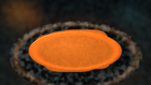
视觉工具实际返回图片 3
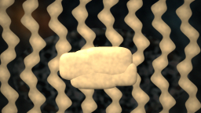
视觉工具实际返回图片 4
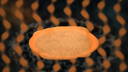
视觉工具实际返回图片 5
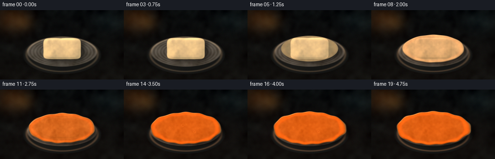
视觉工具实际返回图片 6
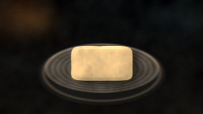
视觉工具实际返回图片 7
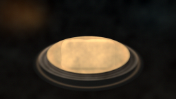
视觉工具实际返回图片 8
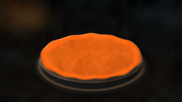
视觉工具实际返回图片 9
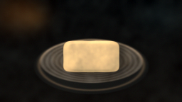
视觉工具实际返回图片 10
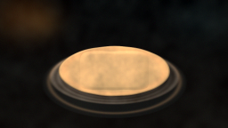
视觉工具实际返回图片 11
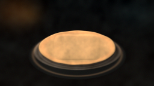
视觉工具实际返回图片 12
视觉工具实际返回图片 13
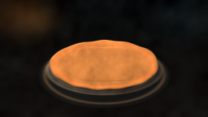
视觉工具实际返回图片 14
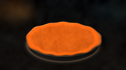
视觉工具实际返回图片 15
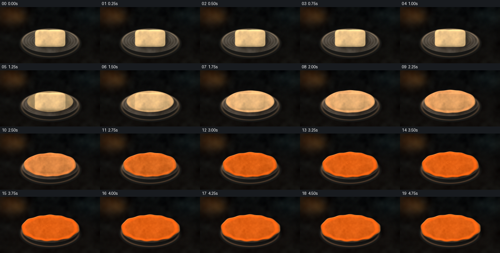
保存候选 3 份；完成命令 17 次；可验证图片返回 15 张。原始 API 响应与完整日志保留在本地。